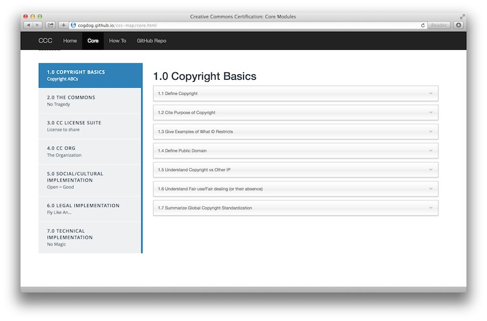
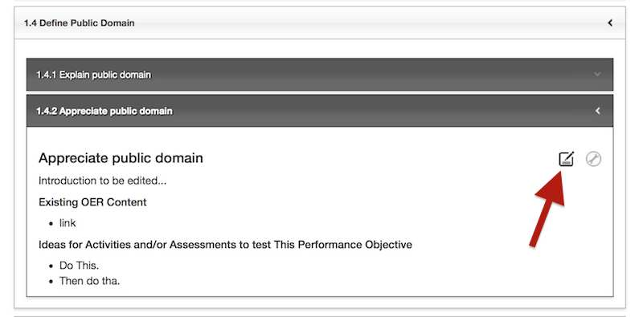
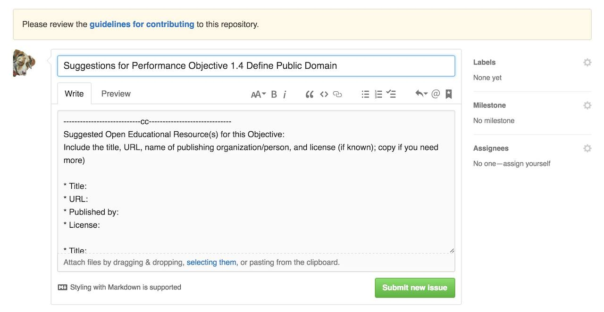
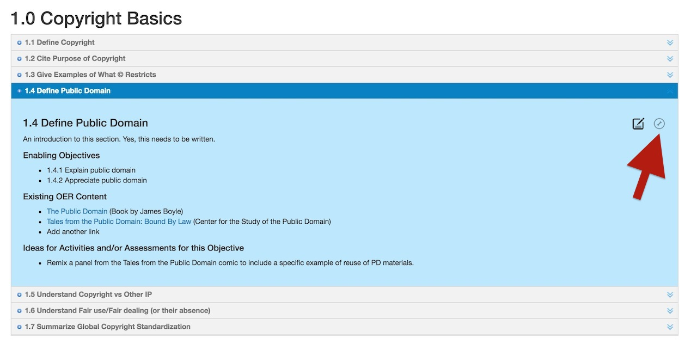
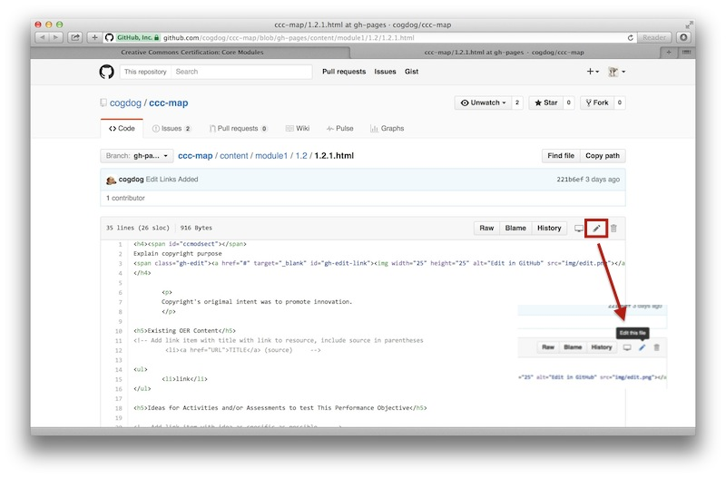

For People Who Don't Want to Fuss Much With GitHub
Not everybody wants to deal with forking and pulling nor editing HTML (but see below if you do), so we have set up a way for you to add your ideas via the project's GitHub Issues . All you need to know how to do is type in a web form, much like a blog comment.
To participate, though, you will need a GitHub account...
You can create one at http://github.com/
Clicking the modules on the top tabs will open its set of Performance Objectives:

Clicking any objective's title will reveal its current information

This includes:
Click the pencil icon  to open the GitHub Issue entry form... it opens with a template offering places for you to edit/add ideas for this objective:
to open the GitHub Issue entry form... it opens with a template offering places for you to edit/add ideas for this objective:

You can add to any of the three areas (or remove ones you are not referring to:
Repeat. And repeat often!
For Those Who "Get" GitHub
If GitHub does not invoke fear but excitement, we welcome you too. We left the option open for you to edit directly in the project.
You can create one at http://github.com/
... by sending a request as an issue (delete the default template content)
Or, if you prefer, at the point of editing, you can create your own branch, and submit edits as a pull request.
Clicking the modules on the top tabs will open its set of Performance Objectives:
Clicking the grey wrench icon will open the source of this objective in GitHub

As viewed in GitHub you will see the HTML code for this objective. Click the pencil/edit icon. Note: If you are asked to "fork" the repository first, this means you have not been added yet as a collaborator from step 2. Please wait or contact us! Or fork away

Now you should be able to edit the content in HTML. The three parts we ask you to edit are:
When done editing, scroll to the bottom. Use the form field under Commit Changes to provide a brief summary of the change; this helps others get a sense of the updates happening on the site. Then click Commit Changes
Return to the Module Map, and reload in your browser-- it might take ~1-2 minutes to show the changes.

Your updates should be reflected in the Objective you were editing.
Repeat. And repeat often
Explore Map Draft 2.0 (spreadsheet) Participant Profiles Exisiting Resources